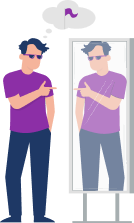

Давайте от теории приступим к практике и проработаем норму через тренажер Master Kit.
Что нам для этого нужно?
Нужен, конечно, сам тренажер и нужна наша цель, которую мы будем прорабатывать через норму.
Мы вписываем в качестве сознательного запроса нашу цель. Причем вы можете попробовать увеличить свою цель. Если вы сейчас работаете над увеличением дохода в 3 раза, то вы можете сделать эту сумму больше, например, в 5 или в 10 раз. В 10 раз будет эффективнее, если вы хотите почувствовать,
как работает норма.
Вы вписываете свой сознательный запрос в тренажер
«Норма»
и проговариваете слова, которые он озвучивает. Это будут слова, связанные с тем,
что если у вас будет ваша цель,
то вы не сможете ощущать себя нормальным человеком,
это будет ненормально для вас.
Повторим: если у вас сейчас есть проблемы с самооценкой,
то норма не будет вам заходить.
Вы не будете понимать, у вас не будет никакой реакции на фразу:
“Если у меня будет моя цель, я не смогу ощущать себя нормальным человеком”.
Вы скажете: «Смогу, конечно! Почему не смогу? Наоборот, я буду ощущать себя очень классным человеком, если у меня будет моя цель».
А о чем это говорит? О том, что здесь требуется не норма, а самооценка.
Если вы чувствуете, что когда у вас будет ваша цель, вы будете ощущать себя по-настоящему классным человеком — проработайте эту цель в тренажере
«Самооценка»:
только если у меня будет моя цель, я смогу ощущать себя классным.
Вот на эту фразу у вас уже будет реакция.
Прямо сейчас определите, на что у вас больше реакция, на норму или на самооценку.
Первый вариант:
вы чувствуете, что если у вас будет цель, вы не сможете ощущать себя нормальным человеком, и эта цель вообще нереальна — значит вам нужен тренажер «Норма».
Второй вариант:
вам отзывается, что только если у вас будет ваша цель, только тогда вы будете ощущать себя классным — значит вам нужен тренажер «Самооценка».
Проработайте либо норму, либо самооценку, в зависимости от того, на что у вас идет больше отклик.